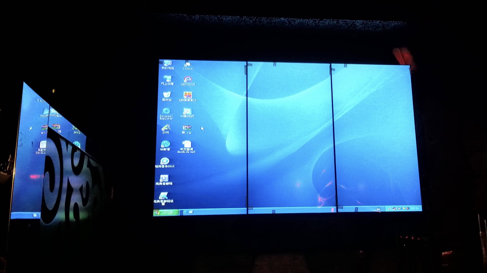
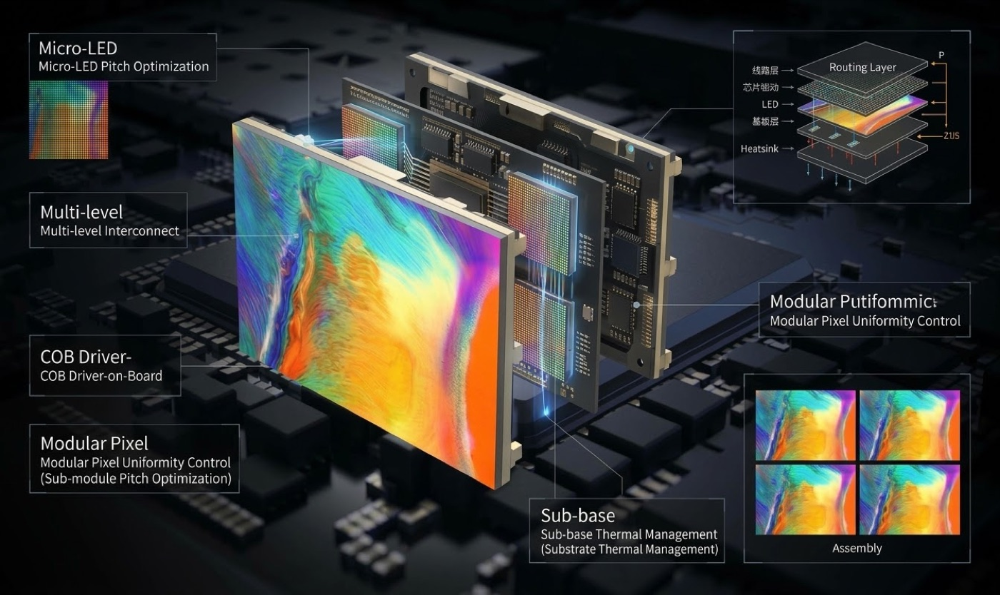

Buyers shopping for a fine-pitch indoor wall quickly meet two terms that are often used as if they were rivals. Micro LED describes an emitter scale, while COB describes how the emitter is packaged onto the board. They overlap, they are frequently confused, and the right choice depends on what the room actually needs. This guide separates the two.
The push toward finer pitch came from interiors, not from outdoor signage. Boardrooms, control rooms, broadcast studios and premium retail spaces all want a screen that reads as a single continuous surface rather than a grid of tiles, and that means shrinking the distance between pixels until the structure disappears at normal viewing distance. Below roughly P1.5, the honest comparison stops being about brightness and starts being about packaging and yield.
COB, or chip-on-board, answers that challenge by mounting the LED chips directly onto the board and covering them with a protective layer. Traditional SMD packaging places each emitter in a discrete lamp and solders it to the surface. The COB approach removes the exposed lamp, which changes almost everything downstream: the surface becomes more robust, the contrast improves because there is less reflective material between pixels, and the module survives handling that would shear SMD lamps off the board.
Micro LED pushes the emitter itself smaller, which allows very fine pitches and high efficiency. In practice the term is used loosely across the market, and buyers need to look past the label to the actual pixel pitch, the contrast ratio and the protection method. A product marketed as micro LED with a coarse pitch and SMD-style packaging delivers none of the benefits the name implies.
Durability expectations have risen alongside the pitch race. A fine-pitch wall in a lobby or a studio gets touched, cleaned and bumped, and a conventional SMD surface damages easily under that treatment. COB's sealed surface tolerates contact, moisture and cleaning agents far better, which is why the technology has moved from a premium niche into the mainstream of indoor specification.
Expectations around viewing distance have tightened as well. A wall in a boardroom is judged from the far end of the table, but the same wall is inspected at close range by the person who switches it on, and a visible pixel grid at that distance reads as a compromise. That is why fine-pitch products are specified not only for the furthest viewer but for the closest one, and why contrast and surface quality at short range have become the measures buyers actually compare when they see panels side by side in a showroom.
Cost pressure has arrived from a different direction. As fine-pitch LED has taken work that once belonged to LCD video walls, buyers now compare an LED wall against a tiled LCD array on price as well as on appearance. LED wins on seamlessness and on serviceability, because a tiled LCD display shows visible bezels and an LED wall does not, but the pitch debate only matters if the total installation cost stays competitive. COB packaging has helped there by improving yield at fine pitches, which is part of why the technology moved from a flagship-only product into ordinary commercial projects. In a control room the trade-off is plain to see: a tiled LCD video wall carries its bezel grid across the whole surface, while a fine-pitch LED wall of the same size reads as one uninterrupted image.


Start from the application rather than the acronym. If the wall will be touched, cleaned frequently, or installed in a humid or dusty interior, the sealed COB surface is the safer specification regardless of pitch. If the project needs the finest available pitch and the budget allows, a micro LED class product delivers the tightest structure and the most convincing single-surface look at close range.
Contrast is the specification that most reliably predicts how the wall is judged. COB panels reaching a 10000:1 ratio produce deep blacks and clean separation, which matters in a studio or a boardroom where the wall sits beside a lit surface. Refresh rate is the second non-negotiable figure: an indoor wall that appears on camera needs 3840Hz or higher to avoid scan bars in the recorded image.
Service access and heat output decide how the wall behaves over years rather than weeks. A studio wall runs long hours, so a cabinet that spreads heat and a power supply that runs comfortably below its limit last far longer than one pushed to its rating. Front access matters in a boardroom or studio where the wall is flush to a finished surface, because removing a cabinet from behind is not an option. Where the project mixes technologies, it usually makes sense to spend the COB budget on the wall that customers and cameras see and use a conventional fine-pitch panel where the audience is more casual.
Cabinet dimensions and mounting depth are the practical details that decide whether a fine-pitch wall fits the room. A very fine pitch often means a larger cabinet with a deeper driver board, which consumes depth behind the finished surface. In a boardroom where the wall is built into joinery, that depth has to be known before the joinery is made. We publish the cabinet size and the required clearance for every product so the interior contractor can set the structure rather than discovering a conflict after the panels arrive.
| Application | Series | Key Specs |
|---|---|---|
| Executive boardroom | COB P1.2 | 10000:1 contrast, sealed surface, 3840Hz |
| Broadcast studio wall | COB P1.5 | Camera-safe refresh, colour-accurate, low latency |
| Control room 24/7 wall | COB P1.25 | Continuous duty, front service, low heat |
| Premium retail feature | COB P0.9 | Ultra-fine pitch, seamless look, high contrast |
| Lobby and reception wall | CV-PRO P1.8 | Fine pitch, slim cabinet, durable finish |
Asia Vision Technology builds both COB and conventional fine-pitch products, so a recommendation comes from the application rather than from whatever we happen to stock. The COB family delivers a 10000:1 contrast ratio with a sealed, impact-resistant surface, which is the combination most indoor installations actually need. Every product carries CE, FCC and RoHS certification, and indoor panels run at 3840Hz refresh for clean camera capture.
Because both technologies come from the same factory, a project can mix them where the budget is uneven: a COB wall in the boardroom where quality is visible and a conventional fine-pitch wall in a corridor where it is not. Products ship on a 15 to 20 working day cycle with a three-year warranty, and we hold matched spare modules for each build so a service call is a like-for-like swap rather than a compatibility puzzle.
We also help clients see through the marketing. A pitch figure and the phrase micro LED do not by themselves describe contrast, protection or driver quality, and two panels with the same nominal pitch can perform very differently in a real room. When we quote a COB or fine-pitch product, we give the contrast ratio, the refresh rate, the surface treatment and the cabinet dimensions, so the decision rests on measurable properties rather than on a label that every competitor uses differently.
Finally, we support the calibration and commissioning stage that fine-pitch walls need. Cabinets from the same production batch still have to be matched on site so that a bright column does not appear where one module sits beside another, and the process is much easier when the supplier documents the factory settings and the recommended adjustment procedure. We provide that information with COB and CV-PRO builds so the integrator or the client's own team can bring the wall to a uniform image without guesswork.
For this requirement our range covers it directly: the COB Z rental series (7680Hz flip-chip) and the COB ZH touring series (sealed, wind-rated).

Need LED display solutions?
Contact Asia Vision for competitive pricing and specs.
📩 Get a Quote WhatsApp